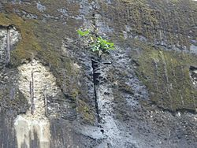

The Mullaperiyar Dam
The dispute

The control and safety of the dam and the validity and fairness of the lease agreement have been points of dispute between Kerala and Tamil Nadu states. Supreme court judgment came in 27 February 2006, allowing Tamil Nadu to raise the level of the dam to 152 ft (46 m) after strengthening it. Responding to it, Mullaperiyar dam was declared an 'endangered' scheduled dam by the Kerala Government under the disputed Kerala Irrigation and Water Conservation (Amendment) Act, 2006.
For Tamil Nadu, the Mullaperiyar dam and the diverted Periyar waters act as a lifeline for Theni, Madurai, Sivaganga and Ramnad districts, providing water for irrigation and drinking, and also for generation of power in Lower Periyar Power Station. Tamil Nadu has insisted on exercising its unfettered rights to control the dam and its waters, based on the 1886 lease agreement. Kerala has pointed out the unfairness in the 1886 lease agreement and has challenged its validity. However, safety concerns posed by the 119-year-old dam to the safety of the people of Kerala in the event of a dam collapse, have been the focus of disputes from 2009 onwards. Kerala's proposal for decommissioning the dam and constructing a new one has been challenged by Tamil Nadu.
Tamil Nadu has insisted on raising the water level in the dam to 142 feet, pointing out crop failures. One estimate states that "the crop losses to Tamil Nadu, because of the reduction in the height of the dam, between 1980 and 2005 is a whopping ₹ 40,000 crores. In the process the farmers of the erstwhile rain shadow areas in Tamil Nadu who had started a thrice yearly cropping pattern had to go back to the bi-annual cropping."
The Kerala Government maintains that this is not true. During the year 1979–80 the gross area cultivated in Periyar command area was 171,307 acres (693.25 km2). After the lowering of the level to 136 ft (41 m), the gross irrigated area increased and in 1994–95 it reached 229,718 acres (929.64 km2).The Tamil Nadu government had increased its withdrawal from the reservoir, with additional facilities to cater to the increased demand from newly irrigated areas.
In 2006, the Supreme Court of India by its decision by a three-member division bench, allowed for the storage level to be raised to 142 feet (43 m) pending completion of the proposed strengthening measures, provision of other additional vents and implementation of other suggestions.
However, the Kerala Government promulgated a new "Dam Safety Act" against increasing the storage level of the dam, which has been challenged by Tamil Nadu on various grounds. The Supreme Court issued notice to Kerala to respond, however did not stay the operation of the Act even as an interim measure. The Court then advised the States to settle the matter amicably, and adjourned hearing in order to enable them to do so. The Supreme Court of India termed the act as not unconstitutional. Meanwhile, the Supreme Court constituted a Constitution bench to hear the case considering its wide ramifications.
The Kerala Government states that it does not object to giving water to Tamil Nadu, their main cause of objection being the dam's safety as it is 116 years old. Increasing the level would add more pressure to be handled by already leaking dam. Tamil Nadu wants the 2006 order of Supreme court be implemented so as to increase the water level to 142 feet (43 m).
In a 2000 Frontline edition, one author stated thus:
"For every argument raised by Tamil Nadu in support of its claims, there is counter-argument in Kerala that appears equally plausible. Yet, each time the controversy gets embroiled in extraneous issues, two things stand out: One is Kerala's refusal to acknowledge the genuine need of the farmers in the otherwise drought-prone regions of Tamil Nadu for the waters of the Mullaperiyar; the other is Tamil Nadu's refusal to see that it cannot rely on or continue to expect more and more from the resources of another State to satisfy its own requirements to the detriment of the other State. A solution perhaps lies in acknowledging the two truths, but neither government can afford the political repercussions of such a confession".
Tamil Nadu argues that the latter is similar to tax revenues unfairly distributed to underdeveloped states within India, to the detriment of the revenue producing states, i.e., a form of wealth distribution. What we see here is a microcosm of the bigger problem that India faces with China, which is building dams on Brahmaputra. In May 2014, Supreme Court of India declared Kerala Irrigation and Water Conservation (Amendment) Act, 2006 as unconstitutional. The Supreme Court on Wednesday struck down the law passed by the Kerala Assembly on the Mullaperiyar Dam that said that the water level cannot be increased beyond 135 feet. The court has ruled that Tamil Nadu can increase the water level to 142 feet.
The court has said that there is no threat to the safety of the dam. The apex court has set up a three-member committee to look into the restoration work at the dam and also advise safety and security measures.
The Kerala government's Dam safety Act of 2006 has been scrapped by the court. In Feb 20, 2015 Kerala Government Withdraws a plea seeking clarification on May 5, 2014 Judgement which the apex court had allowed the raising the water storage level of the dam to 142 feet and go before the three-member Mullaperiyar committee. The apex court had also rejected the plea for giving open court hearing and said there was no reason to interfere with the judgement of its five-judge Constitution Bench. In an application, the Tamil Nadu government said Kerala has defied the Supreme Court’s judgments in "letter and spirit".Without mincing words, it accused the Kerala government of harassment by denying Tamil Nadu officials free entry to carry out routine periodical maintenance and repairs of the dam.The application wants the Supreme Court to direct Kerala government to allow free access to Tamil Nadu officials to the dam and its appurtenant structures to collect data and change the weekly chart in the Mullakodi rainfall station.It said the court should direct Kerala to allow Tamil Nadu to transport the machinery and materials required for carrying out repairs.